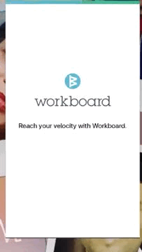
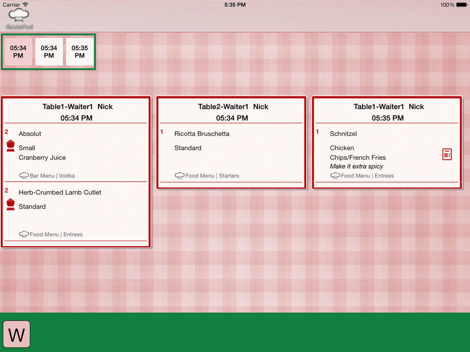
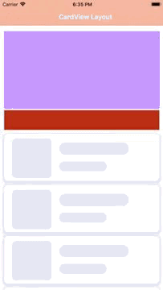
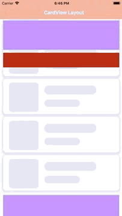

Kaushlendra Pal
Overall 6+ years of relevant work experience in iOS mobile Technology. Expertise in: Full stack IoT Solution Development. troubleshooting and design skills for iOS Mobile apps and publishing to App Store. Understanding of native app development synchronization with web app workflow in offline or online support Designing IoT enabled edge devices and client applications. iOS Testing (Unit Testing, Instrumentation, OCMock Framework). Good at working within tight deadlines, self-motivated and a Team Player. Have worked as a part of Scrum and Agile teams. In-depth understanding on Multithreading, performance optimization, problem-solving skill in apple ecosystem. Experience in developing enterprise universal product from scratch with success story of 5000 active paid users globally
portfolio
Experience
Senior iOS Developer
Full stack IoT Solution Development. troubleshooting and design skills for iOS Mobile apps and publishing to App Store. Designing IoT enabled edge devices and client applications.Experience in developing enterprise universal product from scratch with success story of 5000 active paid users globally Design, Development and Unit Testing Frameworks. Task/Feature estimation and scheduling. Customer interaction for requirement finalization, status/milestone updates
Senior Software Engineer
Have worked as a part of Scrum and Agile teams. Experience in developing enterprise universal product from scratch with success story of 5000 active paid users globally. In-depth understanding on Multithreading, performance optimization, problem-solving skill in apple ecosystem.
Junior UX Developer
Worked as a UI designer and implemented core module and libraries to provide abstraction. Actively particating on product development cycle.Good at working within tight deadlines, self-motivated and a Team Player
Skills
- Mobile-First, Responsive Design
- Designing IoT enabled edge devices and client applications
- Cross Functional Teams
- Agile Development & Scrum
Projects
Vector Occupants
The Honeywell Vector Occupant App is a multi-functional app that connects building managers and occupants to their workplaces to promote safety, productivity and optimizes the occupant experience. It is supported by a cloud-based infrastructure and a rich collection of analytics to help increase occupant comfort as well as the efficiency and cost effectiveness of building operation.

Workboard
Workboard is an enterprise product to increase your business velocity. A user can set up the user role hierarchy as per business and create teams, Goals, work streams, task action items, progress metrics, Setup the meeting with the team and create reports for task status based on various filters. The application works in offline mode also.

Apple University
Apple University is apple internal iPhone / iPad app for enhancing employee soft/technical skill, Employee can select skill category, attribute skill set, based on the skill he can answer the question ask it to some other employee, ask for peer feedback, watch and subscribe video and journals related to the topic.
Radar
Radar is Apple internal bug tracking and Project management tool which is also used for submitting a bug report request enhancement request to API and development tool. Radar Mac app enhancement to reporting management and quick way to raise bug/feature, User Guide window with UI Improvement.
Mobile CRM
CRMIT's Mobile CRM (mCRM) is a versatile application that that connects sales users with the people and information they need to be more productive and efficient.This application lets you create, view, track and edit any of your CRM data such as contacts, accounts, leads, opportunities, notes, tasks, appointments, quotes, orders, analytics and do much more with zero-footprint. It gives an organization the ability to quickly create Quotes and link those Quotes to Accounts, Contacts, or Opportunities. These Quotes are intended to allow an organization to easily and efficiently provide customers with Quick Quotes for pricing and availability.
Restopod Mobile POS
Restopod is cloud-based Platform as Service(POS) restaurant's Point of Distinction! Restopod Mobile provides the mobile interface for the game-changing restaurant management software solution, for table service restaurants and chains and provide in-depth reports built on database.com. the Owner sitting on remote cloud track live update about order table items customer review staff managing different sales.


Education
Uttar Pradesh Technical University
Percentage: 69 %
JNV Sultanpur Senior Secondary
Percentage: 65 %
JNV Mainpuri High School
Percentage: 81 %
Interests
Apart from being a iOS developer, I enjoy most of my time being outdoors.I enjoy biking riding, playing Cricket, and Badminton.
When forced indoors, I follow a number of sci-fi movies and television shows,In Office free time I useed to play Table Tennis. I am an aspiring chef, and I spend a large amount of my free time exploring the latest technolgy advancements and writing blogs in mobile development.
Open Source Developer
Almost every app we developed used open source code partialy.Contributing to open source can be a fun and rewarding experience. I am always oblige to developer who volunteerly developed it with production friendly environment. So I believe the best tributes for them is contribute open-source projects. It gives me an opportunity to volunteer your time to improve a project used by me and my community. I mention my presence in contributing open source community.
library used to provide delight collection view layouts.
-

-

- swift-evolution
- Alamofire